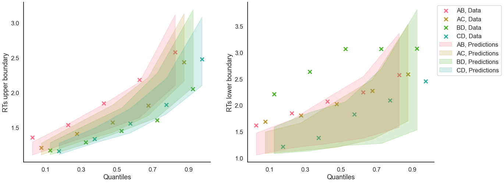

Fit the DDM on individual data¶
[1]:
import rlssm
import pandas as pd
import os
Import the data¶
[2]:
par_path = os.path.abspath(os.path.join(os.getcwd(), os.pardir, os.pardir))
data_path = os.path.join(par_path, 'data/data_experiment.csv')
data = pd.read_csv(data_path, index_col=0)
data = data[data.participant == 20].reset_index(drop=True) # Only select 1 participant
data.head()
[2]:
| participant | block_label | trial_block | f_cor | f_inc | cor_option | inc_option | times_seen | rt | accuracy | |
|---|---|---|---|---|---|---|---|---|---|---|
| 0 | 20 | 1 | 1 | 46 | 46 | 4 | 2 | 1 | 2.574407 | 1 |
| 1 | 20 | 1 | 2 | 60 | 33 | 4 | 2 | 2 | 1.952774 | 1 |
| 2 | 20 | 1 | 3 | 32 | 44 | 2 | 1 | 2 | 2.074999 | 0 |
| 3 | 20 | 1 | 4 | 56 | 40 | 4 | 2 | 3 | 2.320916 | 0 |
| 4 | 20 | 1 | 5 | 34 | 32 | 2 | 1 | 3 | 1.471107 | 1 |
Fit¶
[5]:
# sampling parameters
n_iter = 1000
n_chains = 2
n_thin = 1
[6]:
model_fit = model.fit(
data,
thin = n_thin,
iter = n_iter,
chains = n_chains,
pointwise_waic=False,
verbose = False)
WARNING:pystan:Maximum (flat) parameter count (1000) exceeded: skipping diagnostic tests for n_eff and Rhat.
To run all diagnostics call pystan.check_hmc_diagnostics(fit)
Checks MCMC diagnostics:
n_eff / iter looks reasonable for all parameters
0.0 of 1000 iterations ended with a divergence (0.0%)
0 of 1000 iterations saturated the maximum tree depth of 10 (0.0%)
E-BFMI indicated no pathological behavior
get Rhat¶
[7]:
model_fit.rhat
[7]:
| rhat | variable | |
|---|---|---|
| 0 | 0.999681 | drift |
| 1 | 1.001149 | threshold |
| 2 | 1.000719 | ndt |
get wAIC¶
[8]:
model_fit.waic
[8]:
{'lppd': -224.5578184053441,
'p_waic': 4.177738574454519,
'waic': 457.47111395959723,
'waic_se': 35.237582018474754}
Posteriors¶
[9]:
model_fit.samples.describe()
[9]:
| chain | draw | transf_drift | transf_threshold | transf_ndt | |
|---|---|---|---|---|---|
| count | 1000.00000 | 1000.000000 | 1000.000000 | 1000.000000 | 1000.000000 |
| mean | 0.50000 | 249.500000 | 0.943211 | 2.049441 | 0.916822 |
| std | 0.50025 | 144.409501 | 0.082096 | 0.070829 | 0.011551 |
| min | 0.00000 | 0.000000 | 0.692753 | 1.847843 | 0.880697 |
| 25% | 0.00000 | 124.750000 | 0.888184 | 2.003003 | 0.910203 |
| 50% | 0.50000 | 249.500000 | 0.939421 | 2.044975 | 0.918119 |
| 75% | 1.00000 | 374.250000 | 0.999665 | 2.096679 | 0.924941 |
| max | 1.00000 | 499.000000 | 1.215091 | 2.310383 | 0.945661 |
[10]:
import seaborn as sns
sns.set(context = "talk",
style = "white",
palette = "husl",
rc={'figure.figsize':(15, 8)})
[11]:
model_fit.plot_posteriors(height=5, show_intervals="HDI", alpha_intervals=.05);

Posterior predictives¶
Ungrouped¶
[12]:
pp = model_fit.get_posterior_predictives_df(n_posterior_predictives=100)
pp
[12]:
| variable | rt | ... | accuracy | ||||||||||||||||||
|---|---|---|---|---|---|---|---|---|---|---|---|---|---|---|---|---|---|---|---|---|---|
| trial | 1 | 2 | 3 | 4 | 5 | 6 | 7 | 8 | 9 | 10 | ... | 231 | 232 | 233 | 234 | 235 | 236 | 237 | 238 | 239 | 240 |
| sample | |||||||||||||||||||||
| 1 | 2.299757 | 2.211757 | 2.302757 | 1.465757 | 1.211757 | 1.334757 | 1.192757 | 1.533757 | 3.093757 | 2.062757 | ... | 1.0 | 0.0 | 1.0 | 1.0 | 1.0 | 1.0 | 1.0 | 1.0 | 1.0 | 0.0 |
| 2 | 1.294609 | 2.575609 | 3.754609 | 1.639609 | 1.666609 | 1.415609 | 1.344609 | 2.511609 | 1.951609 | 1.496609 | ... | 1.0 | 0.0 | 1.0 | 1.0 | 1.0 | 1.0 | 1.0 | 0.0 | 1.0 | 1.0 |
| 3 | 1.073134 | 1.938134 | 1.393134 | 1.150134 | 1.213134 | 3.296134 | 1.905134 | 1.630134 | 2.126134 | 1.501134 | ... | 1.0 | 1.0 | 1.0 | 1.0 | 1.0 | 1.0 | 1.0 | 0.0 | 1.0 | 1.0 |
| 4 | 1.146232 | 1.500232 | 1.118232 | 1.306232 | 1.458232 | 1.644232 | 2.296232 | 1.551232 | 2.177232 | 1.090232 | ... | 1.0 | 1.0 | 0.0 | 1.0 | 1.0 | 1.0 | 1.0 | 1.0 | 1.0 | 1.0 |
| 5 | 1.870389 | 1.267389 | 1.153389 | 1.900389 | 1.047389 | 1.067389 | 1.456389 | 1.359389 | 1.918389 | 1.836389 | ... | 1.0 | 1.0 | 1.0 | 1.0 | 1.0 | 1.0 | 1.0 | 1.0 | 1.0 | 1.0 |
| ... | ... | ... | ... | ... | ... | ... | ... | ... | ... | ... | ... | ... | ... | ... | ... | ... | ... | ... | ... | ... | ... |
| 96 | 1.164805 | 1.690805 | 1.840805 | 1.644805 | 1.925805 | 1.943805 | 1.139805 | 2.907805 | 3.114805 | 1.234805 | ... | 1.0 | 1.0 | 1.0 | 0.0 | 1.0 | 1.0 | 1.0 | 1.0 | 1.0 | 1.0 |
| 97 | 2.137362 | 2.259362 | 2.109362 | 1.486362 | 1.468362 | 3.125362 | 2.365362 | 2.327362 | 1.204362 | 2.244362 | ... | 1.0 | 1.0 | 0.0 | 1.0 | 1.0 | 1.0 | 1.0 | 1.0 | 1.0 | 1.0 |
| 98 | 1.231195 | 2.671195 | 1.421195 | 1.736195 | 1.256195 | 1.258195 | 1.084195 | 2.842195 | 2.355195 | 3.060195 | ... | 1.0 | 1.0 | 1.0 | 1.0 | 1.0 | 1.0 | 1.0 | 1.0 | 1.0 | 1.0 |
| 99 | 1.854844 | 1.346844 | 1.635844 | 2.013844 | 1.999844 | 1.478844 | 1.187844 | 1.218844 | 1.558844 | 1.078844 | ... | 1.0 | 1.0 | 1.0 | 1.0 | 1.0 | 1.0 | 1.0 | 1.0 | 1.0 | 1.0 |
| 100 | 1.101517 | 1.796517 | 2.195517 | 1.379517 | 1.046517 | 1.451517 | 1.462517 | 1.216517 | 2.133517 | 2.851517 | ... | 1.0 | 0.0 | 1.0 | 1.0 | 0.0 | 1.0 | 1.0 | 0.0 | 0.0 | 1.0 |
100 rows × 480 columns
[13]:
pp_summary = model_fit.get_posterior_predictives_summary(n_posterior_predictives=100)
pp_summary
[13]:
| mean_accuracy | mean_rt | skewness | quant_10_rt_low | quant_30_rt_low | quant_50_rt_low | quant_70_rt_low | quant_90_rt_low | quant_10_rt_up | quant_30_rt_up | quant_50_rt_up | quant_70_rt_up | quant_90_rt_up | |
|---|---|---|---|---|---|---|---|---|---|---|---|---|---|
| sample | |||||||||||||
| 1 | 0.862500 | 1.766261 | 1.598646 | 1.178757 | 1.360557 | 1.468757 | 1.711157 | 2.477957 | 1.149357 | 1.330157 | 1.577757 | 1.932957 | 2.699357 |
| 2 | 0.845833 | 1.809250 | 1.647380 | 1.154809 | 1.375009 | 1.622609 | 2.223409 | 3.395209 | 1.195809 | 1.352609 | 1.579609 | 1.906009 | 2.564609 |
| 3 | 0.908333 | 1.740988 | 1.333509 | 1.173834 | 1.362434 | 1.670134 | 2.327334 | 3.122034 | 1.139534 | 1.318534 | 1.526634 | 1.903834 | 2.493634 |
| 4 | 0.866667 | 1.775107 | 2.262707 | 1.098832 | 1.283032 | 1.559732 | 1.726832 | 2.593132 | 1.172332 | 1.358032 | 1.576232 | 1.859732 | 2.655532 |
| 5 | 0.854167 | 1.717939 | 2.378613 | 1.142989 | 1.285789 | 1.459389 | 1.688789 | 2.217789 | 1.139989 | 1.320389 | 1.558389 | 1.910389 | 2.484589 |
| ... | ... | ... | ... | ... | ... | ... | ... | ... | ... | ... | ... | ... | ... |
| 96 | 0.875000 | 1.707893 | 1.647229 | 1.226205 | 1.471205 | 1.693805 | 1.980505 | 2.332605 | 1.124805 | 1.301905 | 1.491805 | 1.860605 | 2.516805 |
| 97 | 0.912500 | 1.849358 | 2.560405 | 1.170362 | 1.327362 | 1.543362 | 1.663362 | 2.118362 | 1.190162 | 1.413962 | 1.657362 | 2.037562 | 2.815962 |
| 98 | 0.895833 | 1.709865 | 1.157768 | 1.107795 | 1.287795 | 1.445195 | 1.796995 | 2.052995 | 1.156595 | 1.326395 | 1.542195 | 1.897995 | 2.475795 |
| 99 | 0.883333 | 1.766177 | 2.836819 | 1.217544 | 1.347644 | 1.640844 | 1.912944 | 2.689844 | 1.100044 | 1.309844 | 1.557344 | 1.917344 | 2.596144 |
| 100 | 0.925000 | 1.704517 | 1.449034 | 1.223617 | 1.544017 | 1.619017 | 1.800117 | 2.164917 | 1.173617 | 1.336117 | 1.551017 | 1.860117 | 2.407517 |
100 rows × 13 columns
[14]:
model_fit.plot_mean_posterior_predictives(n_posterior_predictives=100, figsize=(20,8), show_intervals='HDI');

[15]:
model_fit.plot_quantiles_posterior_predictives(n_posterior_predictives=100, kind='shades');

Grouped¶
[16]:
import numpy as np
[17]:
# Define new grouping variables, in this case, for the different choice pairs, but any grouping var can do
data['choice_pair'] = 'AB'
data.loc[(data.cor_option == 3) & (data.inc_option == 1), 'choice_pair'] = 'AC'
data.loc[(data.cor_option == 4) & (data.inc_option == 2), 'choice_pair'] = 'BD'
data.loc[(data.cor_option == 4) & (data.inc_option == 3), 'choice_pair'] = 'CD'
data['block_bins'] = pd.cut(data.trial_block, 8, labels=np.arange(1, 9))
[18]:
model_fit.get_grouped_posterior_predictives_summary(
grouping_vars=['block_label', 'choice_pair'],
quantiles=[.3, .5, .7],
n_posterior_predictives=100)
[18]:
| mean_accuracy | mean_rt | skewness | quant_30_rt_low | quant_30_rt_up | quant_50_rt_low | quant_50_rt_up | quant_70_rt_low | quant_70_rt_up | |||
|---|---|---|---|---|---|---|---|---|---|---|---|
| block_label | choice_pair | sample | |||||||||
| 1 | AB | 1 | 0.95 | 1.611457 | 1.160868 | 2.562757 | 1.230357 | 2.562757 | 1.332757 | 2.562757 | 1.654157 |
| 2 | 0.80 | 1.559659 | 1.266961 | 1.325109 | 1.164609 | 1.547609 | 1.310609 | 1.799709 | 1.738109 | ||
| 3 | 1.00 | 1.417684 | 0.859793 | NaN | 1.251334 | NaN | 1.405634 | NaN | 1.527534 | ||
| 4 | 0.90 | 1.510832 | 0.915726 | 1.208132 | 1.308232 | 1.252732 | 1.516232 | 1.297332 | 1.698132 | ||
| 5 | 0.85 | 1.928039 | 0.374419 | 1.883389 | 1.462389 | 2.097389 | 1.751389 | 2.354589 | 2.271989 | ||
| ... | ... | ... | ... | ... | ... | ... | ... | ... | ... | ... | ... |
| 3 | CD | 96 | 0.95 | 1.525355 | 1.177139 | 1.182805 | 1.278805 | 1.182805 | 1.473805 | 1.182805 | 1.752405 |
| 97 | 0.85 | 1.829112 | 1.162953 | 1.238362 | 1.629762 | 1.244362 | 1.695362 | 1.374362 | 2.065562 | ||
| 98 | 0.95 | 1.852995 | 2.741697 | 1.459195 | 1.368195 | 1.459195 | 1.512195 | 1.459195 | 1.935795 | ||
| 99 | 0.90 | 1.857894 | 1.426069 | 1.969444 | 1.349944 | 2.353844 | 1.577344 | 2.738244 | 1.792044 | ||
| 100 | 0.95 | 1.897717 | 1.688391 | 3.800517 | 1.425717 | 3.800517 | 1.493517 | 3.800517 | 1.889517 |
1200 rows × 9 columns
[19]:
model_fit.get_grouped_posterior_predictives_summary(
grouping_vars=['block_bins'],
quantiles=[.3, .5, .7],
n_posterior_predictives=100)
[19]:
| mean_accuracy | mean_rt | skewness | quant_30_rt_low | quant_30_rt_up | quant_50_rt_low | quant_50_rt_up | quant_70_rt_low | quant_70_rt_up | ||
|---|---|---|---|---|---|---|---|---|---|---|
| block_bins | sample | |||||||||
| 1 | 1 | 0.933333 | 1.912890 | 1.467054 | 1.615257 | 1.581357 | 1.776257 | 1.793757 | 1.937257 | 2.025657 |
| 2 | 0.900000 | 1.814742 | 1.494203 | 1.636009 | 1.303609 | 1.857609 | 1.409609 | 2.224409 | 1.911609 | |
| 3 | 0.933333 | 1.842334 | 1.188122 | 1.407234 | 1.305434 | 1.604634 | 1.665634 | 1.802034 | 2.020434 | |
| 4 | 0.866667 | 1.674399 | 0.719589 | 1.266832 | 1.544232 | 1.364232 | 1.632232 | 1.496832 | 1.795232 | |
| 5 | 0.866667 | 1.868889 | 1.319899 | 3.342289 | 1.307889 | 3.699389 | 1.381889 | 3.840089 | 1.921889 | |
| ... | ... | ... | ... | ... | ... | ... | ... | ... | ... | ... |
| 8 | 96 | 0.933333 | 1.673805 | 2.435611 | 1.808405 | 1.215805 | 1.890805 | 1.335305 | 1.973205 | 1.585705 |
| 97 | 0.833333 | 1.845129 | 1.442219 | 1.387562 | 1.257962 | 1.696362 | 1.592362 | 2.196362 | 2.013162 | |
| 98 | 0.833333 | 1.736628 | 1.399307 | 1.185395 | 1.280995 | 1.282195 | 1.648195 | 1.371795 | 2.010195 | |
| 99 | 0.933333 | 1.504977 | 2.619828 | 1.387944 | 1.263944 | 1.533344 | 1.458344 | 1.678744 | 1.510844 | |
| 100 | 0.833333 | 1.749350 | 1.547375 | 1.458517 | 1.376117 | 1.490517 | 1.550517 | 1.708917 | 1.978317 |
800 rows × 9 columns
[20]:
model_fit.plot_mean_grouped_posterior_predictives(grouping_vars=['block_bins'],
n_posterior_predictives=100,
figsize=(20,8));
[22]:
model_fit.plot_quantiles_grouped_posterior_predictives(
n_posterior_predictives=100,
grouping_var='choice_pair',
kind='shades',
quantiles=[.1, .3, .5, .7, .9]);
